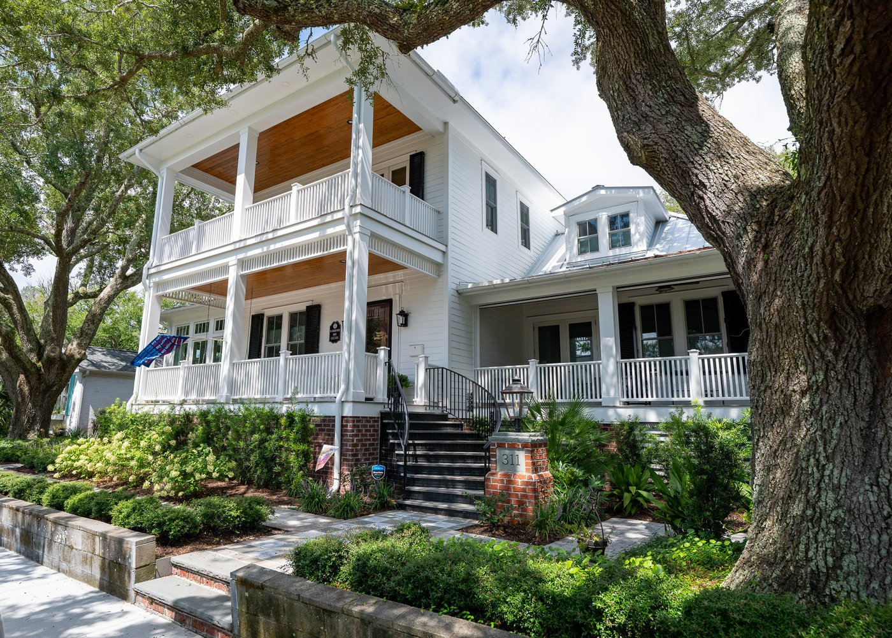

History of 311 East Bay Street

Built circa 1875 by Dr. Lorenzo Frink, a well-known and loved Southport physician, the house was rebuilt in 1890 after storm and fire damage. To this day, the home carries a unique legacy of physicians, with both its original builder and its current owner practicing medicine.
The house is also tied to Hollywood. Actor Joseph Cotten, Frink’s great-grandson who spent much of his childhood visiting here from Virginia. Joseph Cotton was born in 1905 and the family did not sell the old Dr. Lorenzo Frink property until 1916. Young Joseph had over a decade to enjoy the treasures of Southport around the turn of the 20th century.
Through the years, the house was sold a few times with one of its owners, E.J. Prevatte and wife, Amaretta Prevatte purchasing it first in 1954, selling it in 1967 and then (she) purchasing it again in 1976. The Prevatte family enjoyed it the second time for 45 years.
In 2021 the property was purchased from the estate of Amaretta Prevatte by its current owners, Judd & Ellen Moul.
Judd & Ellen have been amazing stewards of the house and taken great care to honor the history of the architecture, home and neighborhood while overseeing a restoration that would make 311 East Bay the treasure that it is today. The Mouls spent nearly two years working with renowned local architect Rich Bandera to make the house and property a treasure.
While planning during 2021-2022, they were approached by the crew of the Mel Gibson film, ‘Monster Summer’ (released in 2024) which was filming in Southport. Since this is one of the only homes in Southport with an enormous basement and had not been renovated yet, this house was perfect for the set which featured some unique scenes. In fact, the basement still has stage paint and cobwebs from the movie set.
A full renovation between 2022 and 2024 preserved original floors, the curving staircase, and historic wood, which was repurposed into beams, mantels, and furnishings.
Uniquely, Dr. Frink’s signature, written in chalk on a beam, was hidden for generations, discovered during the renovations and now on display in the fully heated and air-conditioned basement
The famous Joseph Cotten Jr.
Joseph Cheshire Cotten Jr. was born in May 1905 and lived until February 1994. He was born in Petersburg, Virginia and is buried there as well. Cotten was the great-grandson of Dr. Lorenzo Frink and enjoyed coming to the “Frink-Cotten” house on Bay Street in Southport for 11 years before the family sold it. He had two younger brothers and showed a great deal of talent for drama and storytelling. Cotten first achieved prominence on Broadway then evolved into a film actor. He collaborated with Orson Welles on Citizen Kane (1941), The Magnificent Ambersons (1942) and Journey into Fear (1943). His friendship was so significant with Orson Welles that Cotten was the best man when Welles married Rita Hayworth in 1943.
During Cotten’s life, he became a well-known American film, stage, radio and television actor. He worked with other leading actors including Katharine Hepburn, Olivia de Haviland, Rita Hayworth, Marlene Dietrich, Ingrid Bergman, Shirley Temple, Gregory Peck, Jennifer Jones, Lionel Barrymore and Ginger Rogers. He not only collaborated with historic producers/directors like Orson Welles, but also Alfred Hitchcock and David Selznick to name a few.
Cotten became one of the leading Hollywood actors of the 1940s, appearing in films such as Shadow of a Doubt (1943); Gaslight (1944); Love Letters (1945); Duel in the Sun (1946); The Farmer’s Daughter (1947); Portrait of Jennie (1948), for which he won the Volpi Cup for Best Actor; The Third Man (1949), alongside Welles; and Niagara (1953). One of his final films was Michael Cimino‘s Heaven’s Gate (1980).
Cotten won numerous awards and in 1960, he was given a star on the Hollywood ‘Walk of Fame.’ Film critics and media outlets have cited him as one of the best actors never to have received an Academy Award nomination.
Ironically, while never meeting Cotton, the current owners did meet Gregory Peck and Jennifer Jones while attending a medical research fundraiser and dinner in Hollywood in the early 2000s. In tribute to this, the owners have a movie poster on display in the home from Duel in the Sun starring Cotton, Jones and Peck!
Interesting facts about the Frink-Cotten house:
Entered into the National Register of Historic Places in November 1980 One of only a few houses in Southport with a basement Sits on over a half-acre lot with access from Bay and Rhett Streets Sits high above the Cape Fear River with panoramic views Large front and back yard adorned with Live Oaks, Camellias and Azaleas; all coveted and natural to Southport Over 4,700 square feet, including a new two car garage and full apartment above the garage. This new construction replaced an existing carport. Original wood from the house used for ceiling beams in the living room, family room, back porch and garage entry. Also, for shelves and vent surround in the kitchen and for two fireplace mantles. In the renovation, an old, abandoned cistern was discovered in the attic. The old-growth pine wood for this was used to create an amazing dining room table as well as the coffee table in the living room and an occasional table in the family room. The entire first floor has original wood floors, but these had to be taken up one-by-one to allow for a new subfloor and then lovingly replaced. Original porch posts were repurposed for two birdhouse stands and one weathervane stand in the back and side yards. Over a quarter-million-dollars dedicated to new landscape and hardscape (Drew Holmgren, Landscape Architect, Wilmington NC and hardscape by Bianchi and Sons, Southport, NC Brunswick County Parade of Homes Diamond Award Winner, 2024. S & W Homes, Wilmington, NC The Southport Historical Society Holiday Home Tour appearance will mark the 150th anniversary of the home (1875-2025).